ペンツール
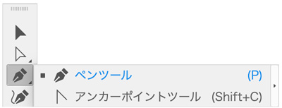
- 「Adobe Illustrator」のツールの中でも最も利用頻度の高いツールが「ペンツール」です
- 思い通りの自由な曲線を描くときに必要になります
Adobe Illustrator ユーザーガイド
ペンツールを自在に使えるようになるための基礎知識
- 「ペンツール」でマススを操作すると、なぜ直線・曲線が描画されるのか（ベジェ曲線の概念）を理解しましょう
- イラストだけではなく、PCを使うときに当たり前に見ている「文字」も「ベジェ曲線」で作られています
マウス操作
- 「ペンツール」を自在に使えるようになるための必須条件は「マウス操作」です
クリック
- マウスボタンを押して離す
- 「直線」を描画するときの操作

ドラッグ
- マウスボタンを押したまま、選択したいモノを外側から囲む

ドラッグ＆ドロップ
- マウスボタンを押しながら「ドラッグ」で移動し、目的の場所で離す
- 「曲線」を描画するときの操作

ベジェ曲線とは
- ベジェ曲線は、フランスの 動 メーカー「ルノー社」の技術者ベジェ氏が、自動車の設計のために考え出した曲線です。
- ベジェ曲線を使えば、コンパスや定規では描けないような微妙なラインを簡単に描くことができます。
- ２点のポイントを決めると、ポイントをつなぐ線を自動的に計算して表示します。
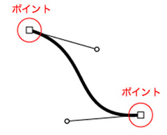
ベジェ曲線の特徴
- ベジェ曲線は、アンカーポイントとセグメントと方向線という3つのパーツの組み合わせで作られています。
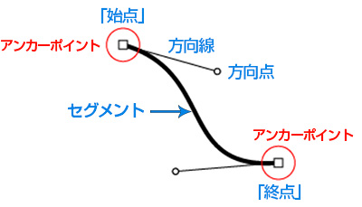
- ペンツールでベジェ曲線を描き始めた点が「始点」で、最後に描いた点が「終点」です。
- ベジェ曲線が折れ曲がる角には、必ずアンカーポイントが必要です。
- １つのアンカーポイントから出るセグメントは、始点や終点の場合は1本、それ以外は2本です。
- ３本以上はありません。つまり枝分かれできません。
- アンカーポイントから出るセグメントが０本の「アンカーポイントだけの状態」を孤立点と呼びます。
セグメント
- セグメントは２点のアンカーポイント間をつなぐ線です。
- アンカーポイントと方向線を元にして自動的に作成されます。修正するときもアンカーポイントと方向線を調整します。
- セグメントはアンカーポイントとアンカーポイントとを、できるだけ滑らかに最短距離でつなごうとします。もっとも短いものが直線です。
- セグメントとアンカーポイントを含めた1本のベジェ曲線をパスと呼びます。
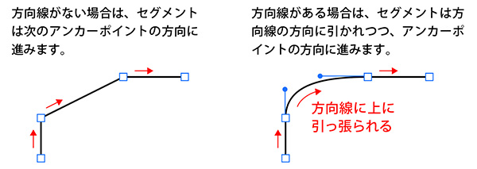
- パスには、始点と終点が閉じていない（つながっていない）オープンパスと閉じている（つながっている）クローズパスがあります。クローズパスだと、始点・終点はありません。
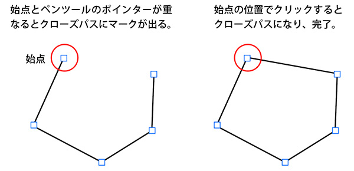
直線の描き方
- 始点でクリック
- 次の点でクリック（間が直線でつながる）
- 終点でクリック
- 余白を、Ctrlキーを押しながらクリックして直線のつながりを解除する
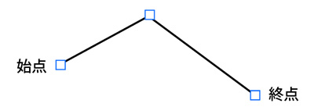
曲線の描き方
- 始点からドラッグして方向線を作成
- 次の点でドラッグして方向線を作成（間が曲線でつながる）
- 終点でもドラッグ
- 余白を、Ctrlキーを押しながらクリックして曲線のつながりを解除する
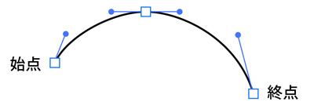
直線から曲線の描き方
- 始点でクリック
- 次の点でクリック（間が直線でつながる）
- 同じ点から曲がる方向にドラッグ
- 終点でもドラッグ
- 余白を、Ctrlキーを押しながらクリックして曲線のつながりを解除する
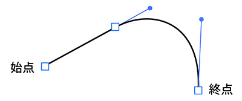
曲線からの直線描き方
- 始点からドラッグして方向線を作成
- 次の点でドラッグして方向線を作成（間が曲線でつながる）
- 同じ点でクリック
- 終点でクリック（間が直線でつながる）
- 余白を、Ctrlキーを押しながらクリックして直線のつながりを解除する
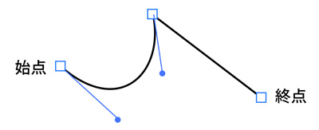
曲線から折り曲げて曲線を描く描き方
- 始点からドラッグして方向線を作成
- 次の点でドラッグして方向線を作成（間が曲線でつながる）
- 同じ点から、Altキーを押しながら折り曲げる方向にドラッグして方向線を作成
- 終点でもドラッグ
- 余白を、Ctrlキーを押しながらクリックして曲線のつながりを解除する
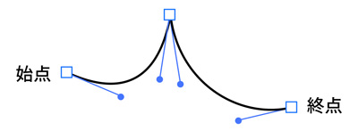
アンカーポイントの追加と削除
- 以下は旧バージョンの場合
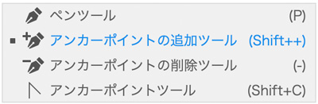
- CC2025では、選択した直線の上を「ペンツール」でクリックすると「アンカーポイントが追加」されます
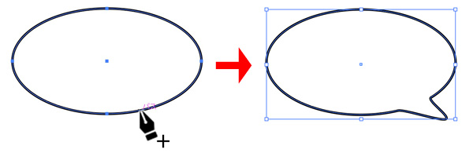
切り替え（アンカーポイントツール）
- 曲線の「方向線」の力を削除
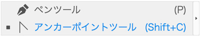
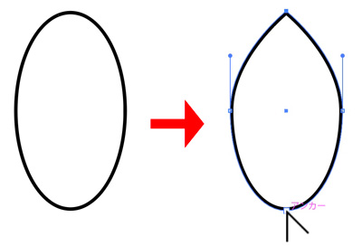
直線を曲線に切り替え
- 「直線」の上でゆっくり「プレス&ドラッグ」する
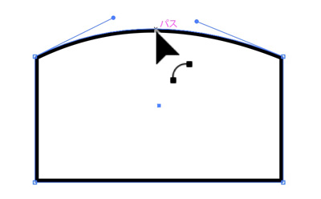
曲線ツール
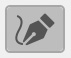
- ペンツールと同様、自由に線を描くことができるツールとして曲線ツールがあります。
- 曲線ツールを使って描画する際には、クリックで曲線をつなぎ、ダブルクリックで直線を繋ぎます。
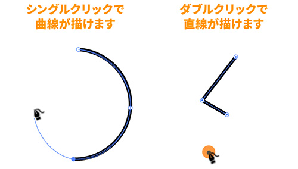
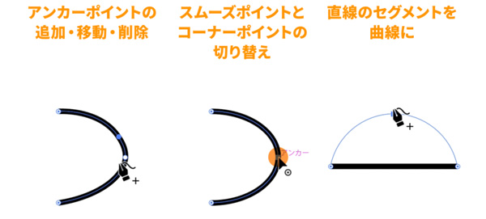